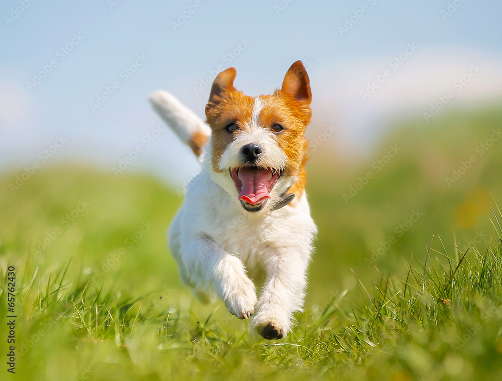
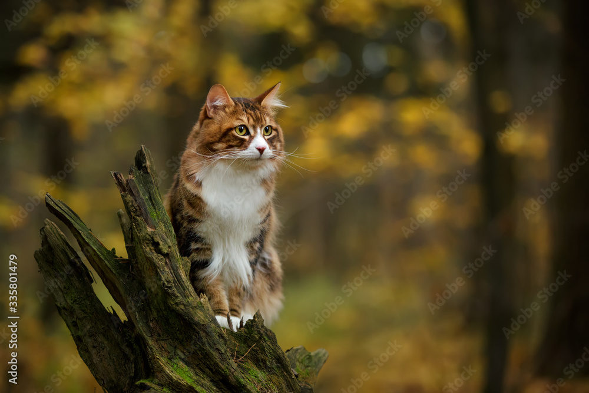
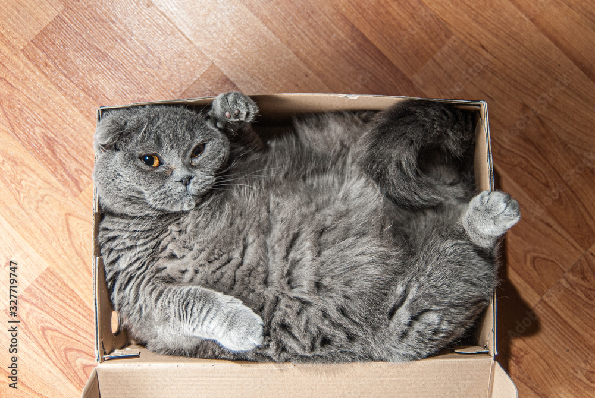

"Every pet deserves a loving home."
120+ adopted
45 fostered
8 Years rescuing animals
Urgent Fosters Needed



Happy Tails
"Bella found us." - The Kim Family
"Max is the best dog ever!" - The Johnson Family